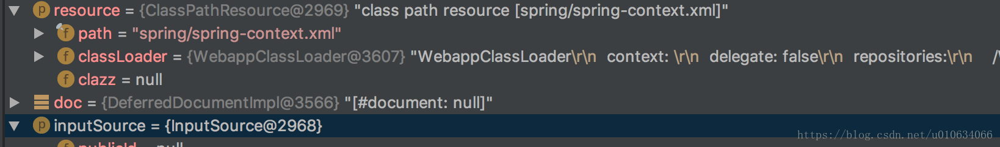

(转)Sring源码解析(一)Spring是怎么读取配置Xml文件的
Spring读取配置文件
Document
在 XmlBeanDefinitionReader.doLoadBeanDefinitions(InputSource inputSource, Resource resource) 方法中将Xml文件转换成Document对象;
Document doc = doLoadDocument(inputSource, resource);

Element
org.w3c.dom.Element 是一个接口 public interface Element extends Node
Spring 中 DefaultBeanDefinitionDocumentReader 中
@Override
public void registerBeanDefinitions(Document doc, XmlReaderContext readerContext) {
this.readerContext = readerContext;
logger.debug("Loading bean definitions");
// 从Document中获取Element
Element root = doc.getDocumentElement();
//注册BeanDefinitions
doRegisterBeanDefinitions(root);
}
在 DefaultBeanDefinitionDocumentReader.doRegisterBeanDefinitions(Element root) 中
protected void doRegisterBeanDefinitions(Element root) {
BeanDefinitionParserDelegate parent = this.delegate;
/**
1.根据Element root创建**BeanDefinitionParserDelegate**对象
2.解析Xml文件头中的一些属性配置到 BeanDefinitionParserDelegate属性（DocumentDefaultsDefinition）defaults；
**/
this.delegate = createDelegate(getReaderContext(), root, parent);
//根据root查询 xml文件的命名空间是不是public static final String BEANS_NAMESPACE_URI = "http://www.springframework.org/schema/beans";
if (this.delegate.isDefaultNamespace(root)) {
//省略.....
}
//默认空实现 子类可以重写这个方法来处理自定义xml文件
preProcessXml(root);
parseBeanDefinitions(root, this.delegate);
//默认空实现 子类可以重写这个方法来处理自定义xml文件
postProcessXml(root);
this.delegate = parent;
}
this.delegate = createDelegate(getReaderContext(), root, parent); 里面调用 BeanDefinitionParserDelegate.initDefaults 方法
- 初始化属性值
private final DocumentDefaultsDefinition defaults = new DocumentDefaultsDefinition(); TODO…
public void initDefaults(Element root, BeanDefinitionParserDelegate parent) { // this.defaults 是一个DocumentDefaultsDefinition对象； populateDefaults(this.defaults, (parent != null ? parent.defaults : null), root); this.readerContext.fireDefaultsRegistered(this.defaults); }BeanDefinitionParserDelegate.populateDefaults 方法主要是讲 xml 文件中的一些命名空间的基本配置转换成 DocumentDefaultsDefinition 对象； 例如
<beans xmlns="http://www.springframework.org/schema/beans" xmlns:xsi="http://www.w3.org/2001/XMLSchema-instance" xmlns:context="http://www.springframework.org/schema/context" xsi:schemaLocation="http://www.springframework.org/schema/beans http://www.springframework.org/schema/beans/spring-beans-3.2.xsd http://www.springframework.org/schema/context http://www.springframework.org/schema/context/spring-context-3.2.xsd" default-autowire="byName" default-lazy-init="false" default-dependency-check="all" >//parentDefaults是父类的DocumentDefaultsDefinition对象 protected void populateDefaults(DocumentDefaultsDefinition defaults, DocumentDefaultsDefinition parentDefaults, Element root) { //查看xml文件中默认的default-lazy-init 值；(如果xml没有显示配置 则它的值为 default)懒加载的默认值 String lazyInit = root.getAttribute(DEFAULT_LAZY_INIT_ATTRIBUTE); if (DEFAULT_VALUE.equals(lazyInit)) { //如果有父类,则以父类的为准，否则将返回false。 lazyInit = (parentDefaults != null ? parentDefaults.getLazyInit() : FALSE_VALUE); } defaults.setLazyInit(lazyInit); //default-autowire-candidates String merge = root.getAttribute(DEFAULT_MERGE_ATTRIBUTE); if (DEFAULT_VALUE.equals(merge)) { // Potentially inherited from outer <beans> sections, otherwise falling back to false. merge = (parentDefaults != null ? parentDefaults.getMerge() : FALSE_VALUE); } defaults.setMerge(merge); //default-autowire String autowire = root.getAttribute(DEFAULT_AUTOWIRE_ATTRIBUTE); if (DEFAULT_VALUE.equals(autowire)) { // Potentially inherited from outer <beans> sections, otherwise falling back to 'no'. autowire = (parentDefaults != null ? parentDefaults.getAutowire() : AUTOWIRE_NO_VALUE); } defaults.setAutowire(autowire); // Don't fall back to parentDefaults for dependency-check as it's no longer supported in // <beans> as of 3.0. Therefore, no nested <beans> would ever need to fall back to it. defaults.setDependencyCheck(root.getAttribute(DEFAULT_DEPENDENCY_CHECK_ATTRIBUTE)); if (root.hasAttribute(DEFAULT_AUTOWIRE_CANDIDATES_ATTRIBUTE)) { defaults.setAutowireCandidates(root.getAttribute(DEFAULT_AUTOWIRE_CANDIDATES_ATTRIBUTE)); } else if (parentDefaults != null) { defaults.setAutowireCandidates(parentDefaults.getAutowireCandidates()); } if (root.hasAttribute(DEFAULT_INIT_METHOD_ATTRIBUTE)) { defaults.setInitMethod(root.getAttribute(DEFAULT_INIT_METHOD_ATTRIBUTE)); } else if (parentDefaults != null) { defaults.setInitMethod(parentDefaults.getInitMethod()); } if (root.hasAttribute(DEFAULT_DESTROY_METHOD_ATTRIBUTE)) { defaults.setDestroyMethod(root.getAttribute(DEFAULT_DESTROY_METHOD_ATTRIBUTE)); } else if (parentDefaults != null) { defaults.setDestroyMethod(parentDefaults.getDestroyMethod()); } //这里是？？？ defaults.setSource(this.readerContext.extractSource(root)); }
DocumentDefaultsDefinition
DocumentDefaultsDefinition(文档的默认值定义)保存了 标准的Spring Xml文件中的 {@code beans} 层级的属性，这些属性是当前Xml配置中的默认全局属性值，例如 { @code default-lazy-init },{ @code default-autowire },等等。
例如:
<beans xmlns="http://www.springframework.org/schema/beans"
xmlns:xsi="http://www.w3.org/2001/XMLSchema-instance" xmlns:context="http://www.springframework.org/schema/context"
xsi:schemaLocation="http://www.springframework.org/schema/beans http://www.springframework.org/schema/beans/spring-beans-3.2.xsd
http://www.springframework.org/schema/context http://www.springframework.org/schema/context/spring-context-3.2.xsd"
default-autowire="byName" default-lazy-init="false" default-dependency-check="all" >
DefaultsDefinition
默认定义的标记接口，没有任何定义 ，只是单纯的标记一下；继承BeanMetadataElement类；通常具体的实现（例如DocumentDefaultsDefinition）是基于文档的默认值，例如在一个XML文档根标记级别来进行设置默认值
BeanMetadataElement
需要被实现的元数据接口，这个接口定义了Object getSource()方法，返回一个配置源对象 ```java public class DocumentDefaultsDefinition implements DefaultsDefinition { //初始化懒加载 private String lazyInit; // private String merge; // 自动装载的类型 private String autowire; // private String dependencyCheck;
private String autowireCandidates;
//初始化方法
private String initMethod;
//销毁方法
private String destroyMethod;
//返回配置源对象
private Object source;
//省略 get set ......
}
default-autowire和autowire的可选值
| 可选值 | 功能说明 |
| ----------- | ------------------------------------------------------------ |
| no | 默认不使用autowiring。 必须显示的使用”“标签明确地指定bean。 |
| byName | 根据属性名自动装配。此选项将检查容器并根据名字查找与属性完全一致的bean，并将其与属性自动装配。 |
| byType | 如果容器中存在一个与指定属性类型相同的bean，那么将与该属性自动装配。如果存在多个该类型的bean，那么将会抛出异常，并指出不能使用byType方式进行自动装配。若没有找到相匹配的bean，则什么事都不发生，属性也不会被设置。如果你不希望这样，那么可以通过设置 dependency-check=”objects”让Spring抛出异常。 |
| constructor | 与byType的方式类似，不同之处在于它应用于构造器参数。如果在容器中没有找到与构造器参数类型一致的bean，那么将会抛出异常。 |
| autodetect | 通过bean类的自省机制（introspection）来决定是使用constructor还是byType方式进行自动装配。如果发现默认的构造器，那么将使用byType方式。 |
解析完了一些xml中Element的默认属性,接下来就是解析Element中的子属性了
`DefaultBeanDefinitionDocumentReader.parseBeanDefinitions(root, this.delegate);`
这个方法里我们主要看 `delegate.parseCustomElement(ele);`
```java
public BeanDefinition parseCustomElement(Element ele, BeanDefinition containingBd) {
//获取命名空间
String namespaceUri = getNamespaceURI(ele);
//根据命名空间得到命名空间的处理类handler 如果是dubbo的uri 则返回的就是DubboNamespaceHandler
//他们都继承自NamespaceHandlerSupport implements NamespaceHandler
//里面有调用了hander的init()...
NamespaceHandler handler = this.readerContext.getNamespaceHandlerResolver().resolve(namespaceUri);
if (handler == null) {
error("Unable to locate Spring NamespaceHandler for XML schema namespace [" + namespaceUri + "]", ele);
return null;
}
//1.根据Element的getLocalName()得到Element的name，然后根据这个name去NamespaceHandlerSupport中的一个属性为private final Map<String, BeanDefinitionParser> parsers ;中查找对应的解析器；这个解析器是什么时候被放到这个map里面的呢？TODO...
//2.根据对应的解析器调用 .parse(element,parserContext)进行解析
return handler.parse(ele, new ParserContext(this.readerContext, this, containingBd));
}
让我们来单独解析一下
NamespaceHandler handler = this.readerContext.getNamespaceHandlerResolver().resolve(namespaceUri)
首先了解一下 this.readerContext是BeanDefinitionParserDelegate 中的一个属性
private final XmlReaderContext readerContext;
XmlReaderContext
继承了ReaderContext类，并且提供了 对XmlBeanDefinitionReader 和 NamespaceHandlerResolver的访问权限；
public class XmlReaderContext extends ReaderContext {
//可以看到 方法权限是private 的
private final XmlBeanDefinitionReader reader;
private final NamespaceHandlerResolver namespaceHandlerResolver;
public XmlReaderContext(
Resource resource, ProblemReporter problemReporter,
ReaderEventListener eventListener, SourceExtractor sourceExtractor,
XmlBeanDefinitionReader reader, NamespaceHandlerResolver namespaceHandlerResolver) {
super(resource, problemReporter, eventListener, sourceExtractor);
this.reader = reader;
this.namespaceHandlerResolver = namespaceHandlerResolver;
}
//但是提供了一些访问的方法
public final XmlBeanDefinitionReader getReader() {
return this.reader;
}
public final BeanDefinitionRegistry getRegistry() {
return this.reader.getRegistry();
}
public final ResourceLoader getResourceLoader() {
return this.reader.getResourceLoader();
}
public final ClassLoader getBeanClassLoader() {
return this.reader.getBeanClassLoader();
}
public final Environment getEnvironment() {
return this.reader.getEnvironment();
}
public final NamespaceHandlerResolver getNamespaceHandlerResolver() {
return this.namespaceHandlerResolver;
}
public String generateBeanName(BeanDefinition beanDefinition) {
return this.reader.getBeanNameGenerator().generateBeanName(beanDefinition, getRegistry());
}
public String registerWithGeneratedName(BeanDefinition beanDefinition) {
String generatedName = generateBeanName(beanDefinition);
getRegistry().registerBeanDefinition(generatedName, beanDefinition);
return generatedName;
}
public Document readDocumentFromString(String documentContent) {
InputSource is = new InputSource(new StringReader(documentContent));
try {
return this.reader.doLoadDocument(is, getResource());
}
catch (Exception ex) {
throw new BeanDefinitionStoreException("Failed to read XML document", ex);
}
}
1.那XmlReaderContext是什么时候被赋值的呢？我们顺着XmlReaderContext了解一下 ①. XmlBeanDefinitionReader.registerBeanDefinitions中被创建
public int registerBeanDefinitions(Document doc, Resource resource) throws BeanDefinitionStoreException {
BeanDefinitionDocumentReader documentReader = createBeanDefinitionDocumentReader();
int countBefore = getRegistry().getBeanDefinitionCount();
//创建XmlReaderContext，然后赋值给BeanDefinitionDocumentReader中readerContext属性中
documentReader.registerBeanDefinitions(doc, createReaderContext(resource));
return getRegistry().getBeanDefinitionCount() - countBefore;
}
public XmlReaderContext createReaderContext(Resource resource) {
//this 最后就是 XmlReaderContext中的XmlBeanDefinitionReader属性
return new XmlReaderContext(resource, this.problemReporter, this.eventListener,
this.sourceExtractor, this, getNamespaceHandlerResolver());
}
public NamespaceHandlerResolver getNamespaceHandlerResolver() {
if (this.namespaceHandlerResolver == null) {
this.namespaceHandlerResolver = createDefaultNamespaceHandlerResolver();
}
return this.namespaceHandlerResolver;
}
/**
*如果没有具体的实现类，则创建 默认的实现类返回
* 默认的实现类DefaultNamespaceHandlerResolver中的handlerMappingsLocation属性（Resource location to search for）=META-INF/spring.handlers
*/
protected NamespaceHandlerResolver createDefaultNamespaceHandlerResolver() {
return new DefaultNamespaceHandlerResolver(getResourceLoader().getClassLoader());
}
②.创建后的XmlReaderContext被当做 BeanDefinitionParserDelegate 构造函数的参数来创建BeanDefinitionParserDelegate对象
protected void doRegisterBeanDefinitions(Element root) {
BeanDefinitionParserDelegate parent = this.delegate;
this.delegate = createDelegate(getReaderContext(), root, parent);
//省略.....
}